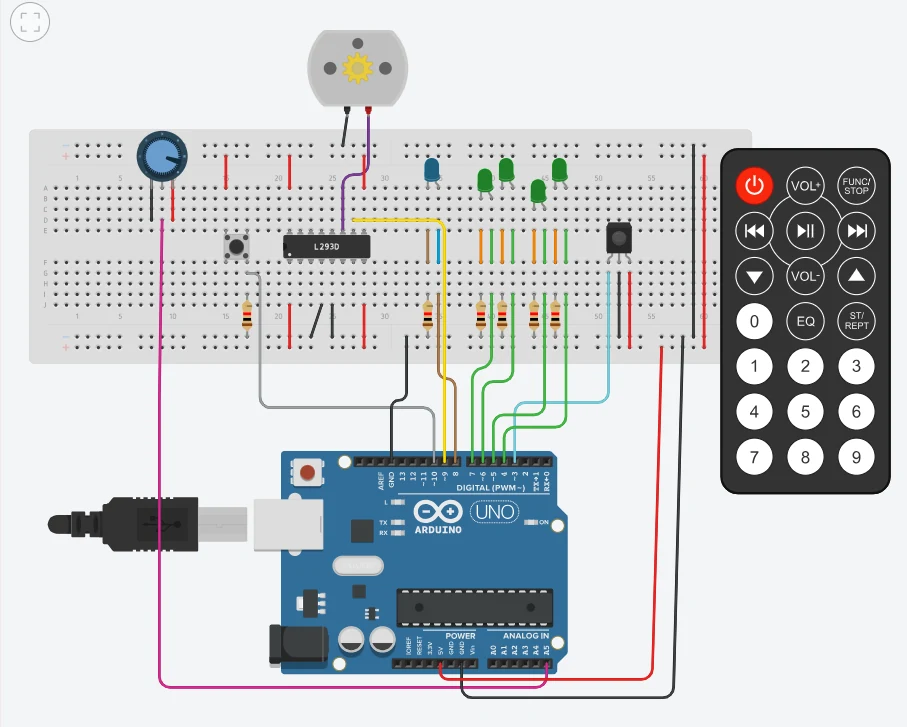
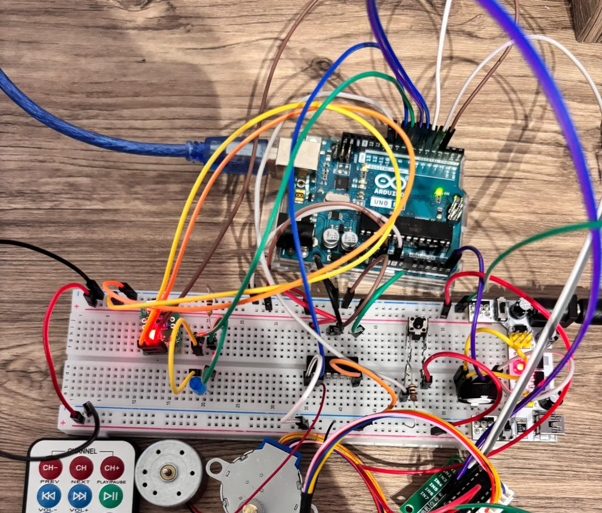

Problem and purpose
Solar energy is variable, while household appliances need power throughout their operating cycles. This project investigated whether a microcontroller could schedule a washing-machine model through fill, wash, drain, rinse and spin stages only when the simulated available-power level met each stage’s requirement.
The prototype is an engineering demonstration. It is not powered by a solar panel: an infrared (IR) remote stands in for a solar-energy monitoring system.
Two versions of the project


What I implemented
- Arduino Uno program written in embedded C/C++.
- Infrared remote input representing four available-power levels, from 0 to 3.
- Custom eight-step control sequence for bidirectional stepper-motor movement without using a stepper-motor library.
- Water-level monitoring through a potentiometer connected to analogue input A5.
- Start button, inlet indicator, drain-pump output and serial-monitor feedback.
- Separate functions controlling fill, wash, drain, rinse and spin operations.
- Physical prototyping, debugging and documentation, supported by Tinkercad simulation.
Control logic and cycle sequence
| Power level | Controller action |
|---|---|
| 0 | Wait for higher available power |
| 1 | Allow filling and draining |
| 2 | Allow washing and rinsing |
| 3 | Allow spinning |
At the start of each operation, the checkPower() routine waits for enough power before the operation proceeds. Filling stops at an indicated 80% water level; draining ends at 10% or below. These levels are modelled through the analogue input.
Technical distinction: the provided sketch checks power before each washing stage rather than continuously during every motor step. Interrupting a stage immediately after a sudden power drop would need additional code.
Source code and design evidence
The project’s submitted Arduino code is available below, alongside the Tinkercad design link. The downloadable sketch is copied from the uploaded project code; it has not been recompiled or run independently here.
void fillDrum() {
checkPower(lowPower, infraredPin);
digitalWrite(inletValve, HIGH);
while (readWaterLevel() < fullWaterLevel) {
delay(400);
}
digitalWrite(inletValve, LOW);
}Excerpt from the uploaded Arduino sketch: the valve output is controlled using the required power level and the analogue water-level input.
Outcome and lessons learned
The accompanying 2025 technical report describes working simulated and physical versions that completed the programmed washing stages. The photographs provide evidence of the physical build, while the code demonstrates cycle sequencing, input handling and motor-control logic.
This work strengthened my skills in microcontroller programming, prototyping, debugging and converting an engineering specification into demonstrable software and hardware.
Scope and limitations
This is a scaled-down proof of concept, not a commercially safe washing machine. The infrared controller simulates solar availability; no actual solar inverter, mains-powered appliance or full water system is connected. A future version could add measured solar generation, improved live power monitoring and additional appliance safety features.